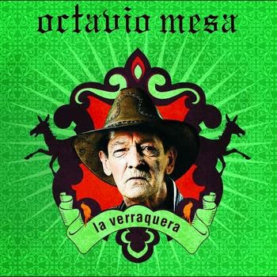

Guasca
La guasca es un género musical arraigada de los departamentos colombianos de Antioquia y el Eje cafetero. La influencia mexicana en la música guasca es evidente, prácticamente es la base de esta música. La música mexicana se instaló y se arraigó en Colombia gracias al cine mexicano de la época de oro entre las décadas de 1930 y 1950, en el que se exponían músicas de diversos géneros populares mexicanos, como la ranchera, el corrido, el huapango, la norteña, la música de banda, entre otras. Particularmente en Antioquia, donde aquellos ritmos de origen mexicano viajaban a través de los ferrocarriles en formato de disco vinilo, los campesinos interpretaban sus propias versiones de rancheras y corridos, combinándolas con sonidos derivados del bambuco, el pasillo o el joropo; a esta nueva música se le nombró carrilera, guasca o guascarrilera.

Música parrandera
La guasca evoluciono en el momento mismo que los compositores empezaron a incluir elementos de la rumba y estos fueron fusionados con la música guasca y los merengues del genial Buitraguito, es cuando realmente nace la música parrandera, así lo señala el investigador Burgos en una de sus narrativas, a propósito del fenómeno que es y ha sido esta música, que a pesar del tiempo, las nuevas tecnologías y la virtualidad se reúsa a desaparecer y sigue dando de qué hablar cada vez que el mes número 12 del calendario vuelve hacer protagonista del almanaque.